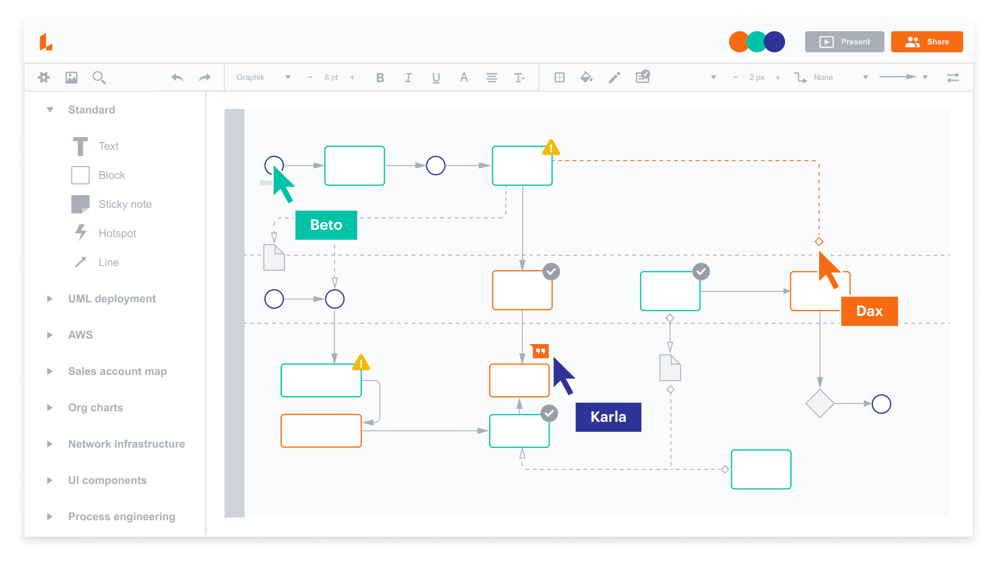

- Exemplo de fluxogramas -
Os fluxogramas podem mostrar de forma visual o funcionamento dos algoritmos usados nos bancos de dados, mostrando o fluxo de dados desde a entrada até o processamento em cada etapa, e os resultados finais. Isso torna mais fácil compreender os processos e identificar oportunidades de otimização.
- Cada parte do processo do fluxograma -
Retângulo
A ação ou o processo acontecendo.
Oval
Início e fim do processo.
Losango
O que são os caminhos possíveis.
Paralelograma
Entrada e saída de dados.
Seta
Para onde vai o processo.
Fluxograma - array para pares e ímpares
Este fluxograma exemplifica como um algoritmo separa números e ímpares em um array. O processo inclui percorrer cada número, verifique se é par ou ímpar e direcione-o para a lista correspondente.
Software para construir um fluxograma
Lucidchart é uma das ferramentas existentes para podermos criar fluxogramas, tem modelos prontos, podendo interagir com os elementos presentes, um software facil e intuitivo de se entender, sendo ideal para criar fluxogramas de algoritmos e processos empresariais pois também se pode criar fluxogramas compartilhados.

fonte: LucidChart fluxograma